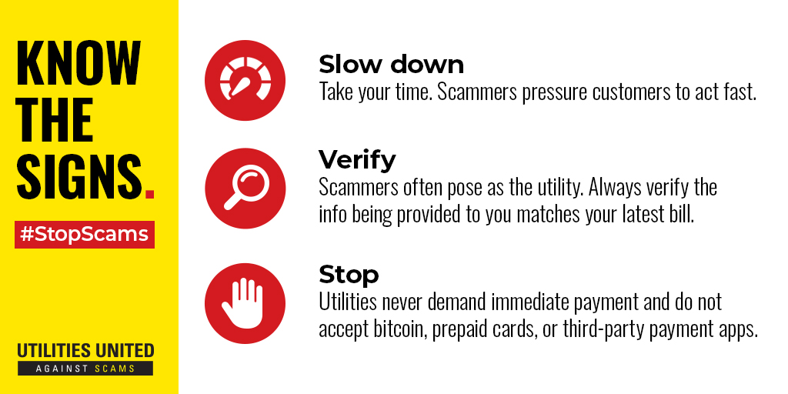

Becoming more aware of scams involves developing a combination of critical thinking skills, knowledge about common scam tactics, and practicing cautious behaviors online and offline.
The list can go go on, but here are a few main ways to minimize your chances of being scammed.To reduce the risk of falling victim to scams, it's essential to prioritize the security of your devices by ensuring they're regularly updated and shielded with reputable antivirus software. Additionally, employ strong, unique passwords for each of your accounts and activate two-factor authentication to build stronger security measures. Be cautious when encountering unsolicited communications, whether via email, phone calls, text messages, or social media platforms, particularly if they solicit personal details or payment. Pay attention to warning signs such as grammatical errors, requests for payment via unconventional methods, or offers promising guaranteed returns or prizes. Before making any purchases or financial commitments, conduct thorough research on the company or product,viewing reviews and complaints. Regularly monitor your financial statements for any irregular transactions and exercise prudence when handling links and attachments in unsolicited correspondence, as they could harbor malware. Trust your intuition and exercise caution if something appears dubious, even if you're unable to pinpoint the exact reason. By adhering to these precautions, you can enhance your defenses against scams and safeguard your financial and personal information.
